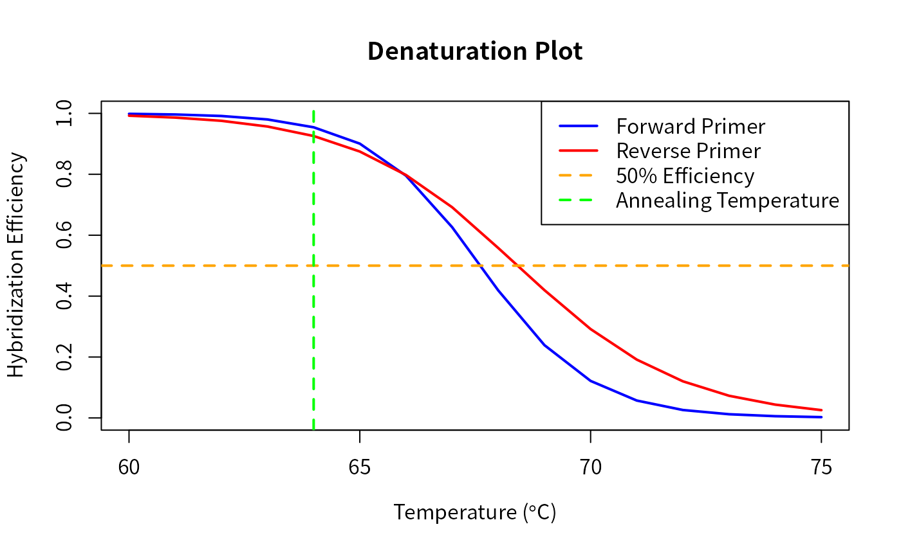

Design Group-Specific Primers
Erik S. Wright
2023-11-15
DesignPrimers.RmdIntroduction
This document describes how to design group-specific primers using
the DECIPHER package through the use of the
DesignPrimers function. As a case study, this tutorial
focuses on the Internal Transcribed Spacer (ITS) of fully sequenced
genomes belonging to different species of the genus
Streptomyces. The ITS resides on the chromosome between the
genes coding for the 16S and 23S ribosomal RNA. The examples in this
document are directed towards finding primers that target a
single species of Streptomyces among a number of
closely related Streptomyces species. However, a similar
strategy could be used with any set of aligned sequences that are
separated into groups. For example, genus-specific primers targeting the
16S gene that have been designed with this program are provided online
at http://DECIPHER.codes.
A database of aligned DNA sequences separated into
groups is used as input to the program. First the function
TileSeqs is used to pre-process the sequences into
overlapping tiles, which will serve as the template DNA for primer
design. Second, the DesignPrimers function determines the
set of all possible primers that meet certain design constraints, such
as the ability to efficiently amplify the group of interest under
specified experimental conditions. Next, the complete set of primers is
scored for its predicted potential to cross-amplify with DNA belonging
to other groups. Finally, the optimal set of forward and reverse primers
is chosen that could be used in a PCR experiment to enrich for the DNA
of interest in a sample containing DNA from multiple groups.
The Objective of Primer Design
The objective of primer design is straightforward: to determine a set of forward and reverse primers that will amplify one group of sequences (the target) but no others (the non-targets). If such a primer set is unattainable then the goal becomes to accurately predict potential cross-amplification with non-target groups. This knowledge enables an educated assessment of the different primer options that could be used to minimize non-target interference. The chosen primers could then be synthesized and experimentally characterized with PCR or quantitative PCR (qPCR).
Possible applications include:
allele specific PCR
quantifying a subset of organisms in a sample
enriching for the DNA of a target group before downstream sequencing.
Improved specificity to the target group is achieved in two ways: 1) by decreasing hybridization efficiency, and 2) by minimizing elongation efficiency of the primer with non-target DNA. Hybridization efficiency is a theoretical variable that represents the fraction of DNA template bound to primer during the annealing step of PCR thermal cycling. In this manner, mismatches between the primer and DNA templates are utilized to lower the affinity of the primers to non-target DNA. Elongation efficiency represents the efficiency of the DNA polymerase at initiating extension of the DNA template from a mismatched 3’ primer terminus, and is measured relative to the perfectly matched primer’s ability to elongate. Mismatches near the 3’ end of the primer are used to hinder extension of non-target DNA templates thereby increasing specificity of the primers to target DNA. Therefore, this model of terminal mismatches offers the dual benefits of decreased hybridization and elongation efficiency, which allows for more accurate predictions of amplification efficiency and increased specificity to the target group.
Getting Started
Installing OligoArrayAux
The program OligoArrayAux (http://www.unafold.org/Dinamelt/software/oligoarrayaux.php) is used to predict hybridization efficiency and must be installed in a location accessible by the system. For example, the following code should print the installed OligoArrayAux version when executed from the R console:
system("hybrid-min -V")Start up
To get started we need to load the DECIPHER package, which automatically loads several other required packages.
Help for the DesignPrimers function can be accessed
through:
> ? DesignPrimersIf DECIPHER is installed on your system, the code in each example can be obtained via:
> browseVignettes("DECIPHER")Creating a Sequence Database
We begin with a set of aligned sequences belonging to the Internal Transcribed Spacer (ITS) of several Streptomyces chromosomes. We wish to determine if the ITS region has enough variability to be used for distinguishing between these closely related species with qPCR. This example uses a FASTA sequence file included as part of the DECIPHER package, but you could follow along with your own FASTA file of aligned sequences. Be sure to change the path names to those on your system by replacing all of the text inside quotes labeled “\(<<\)path to …\(>>\)” with the actual path on your system.
# specify the path to your sequence file:
fas <- "<<path to FASTA file>>"
# OR find the example sequence file used in this tutorial:
fas <- system.file("extdata", "Streptomyces_ITS_aligned.fas", package="DECIPHER")Next, there are two options for importing the sequences into a database: either save a database file or maintain the database in memory. Here we will build the database in memory because it is a small set of sequences and we do not intend to use the database later:
# specify a path for where to write the sequence database
dbConn <- "<<path to write sequence database>>"
# OR create the sequence database in memory
dbConn <- dbConnect(SQLite(), ":memory:")
Seqs2DB(fas, "FASTA", dbConn, "Streptomyces")##
Reading FASTA file chunk 1
##
## 88 total sequences in table Seqs.
## Time difference of 0.05 secsDefining Groups
At this point we need to define groups of related sequences in the
database we just created. In this case we wish to define a unique group
for the sequences belonging to each species of Streptomyces. In
order to accomplish this we must parse the information contained in the
description of each FASTA sequence record that we just imported.
Alternatively we could use the functions IdentifyByRank,
FormGroups, Clusterize, or
TreeLine to define groups.
# get the FASTA record description
desc <- dbGetQuery(dbConn, "select description from Seqs")
# parse the sequence description to obtain the species name
desc <- unlist(lapply(strsplit(desc$description, "Streptomyces ", fixed=TRUE),
function(x) return(x[length(x)])))
desc <- gsub("sp. ", "", desc, perl=TRUE)
desc <- gsub("sp_", "", desc, perl=TRUE)
desc <- unlist(lapply(strsplit(desc, " ", fixed=TRUE), function(x) return(x[1])))
unique(desc)## [1] "albus" "clavuligerus" "ghanaensis"
## [4] "griseoflavus" "lividans" "pristinaespiralis"
## [7] "Mg1" "SPB78" "AA4"
## [10] "SPB74" "SirexAA-E" "scabiei"
## [13] "griseus" "coelicolor" "cattleya"
## [16] "bingchenggensis" "avermitilis" "C"
## [19] "Tu6071"Now that we have our 19 different species names, we must add them to the database as the identifier of each sequence.
Add2DB(data.frame(identifier=desc, stringsAsFactors=FALSE), dbConn)## Expression:
## update Seqs set identifier = :identifier where row_names = :row_names
##
## Added to table Seqs: "identifier".
##
## Time difference of 0 secsPrimer Design Steps
Tiling Sequences
We continue by creating a set of k-mers, known as “tiles”, that
represent the sequences in each group. Here we must make several
decisions that will affect primer design in the future. The defaults are
to create tiles of length 26-27 nucleotides with up to 10 permutations
that represent at least 90% of the permutations present in each target
site. These parameters will generally fit most primer designs, but it is
recommended to read the help file for the TileSeqs function
to make sure that it is doing what is desired. We will save the
resulting tiles back to the database as a new table named “Tiles” in
case we wish to access them in the future.
tiles <- TileSeqs(dbConn, add2tbl="Tiles", minCoverage=1)## ================================================================================
##
## Time difference of 8.44 secsNow we can examine the first few tiles by using the head
command. Here we see that some tiles have been flagged as
misprime=TRUE, which in this case was caused by some
permutations of this target site containing degenerate bases (N’s).
Ambiguity codes are not used in primer design and are thus excluded from
consideration as potential target sites for primers. Other reasons for
mispriming include runs of a single base and di-nucleotide repeats,
which increase primer entropy and could result in non-specific
annealing. If at least a minCoverage fraction of the group
could not be represented in maxPermutations then
misprime is also marked as TRUE.
head(tiles)## row_names start end start_aligned end_aligned misprime width id coverage
## 1 1 1 27 1 28 TRUE 627 albus 0.6
## 2 2 2 28 2 29 TRUE 627 albus 0.6
## 3 3 3 29 3 30 TRUE 627 albus 0.6
## 4 4 4 30 4 31 TRUE 627 albus 0.6
## 5 5 5 31 5 32 FALSE 627 albus 1.0
## 6 6 6 32 6 33 FALSE 627 albus 1.0
## groupCoverage target_site
## 1 0.6 TGTACACACCGCCCGTCACGTCACGAA
## 2 0.6 GTACACACCGCCCGTCACGTCACGAAA
## 3 0.6 TACACACCGCCCGTCACGTCACGAAAG
## 4 0.6 ACACACCGCCCGTCACGTCACGAAAGT
## 5 1.0 CACACCGCCCGTCACGTCACGAAAGTC
## 6 1.0 ACACCGCCCGTCACGTCACGAAAGTCGDesigning All Possible Primers
Next we wish to design primers for the group S. avermitilis.
As an example, we will begin by designing primers for every possible
target site that meet certain design criteria. For example, the default
reagent conditions are defined as: 3 mM [dNTPs], 70 mM [\(K^{+}\)], 3 mM [\(Mg^{2+}\)], and a primer concentration of
400 nM. Also, the defaults specify that up to 4 forward or reverse
primer permutations can be used so long as they cover 90% of the
variants present in their target site. In this case we wish to encompass
100% of each species’ sequences, so we will use
minCoverage = 1 and minGroupCoverage = 1
rather than the default 90% and 20%, respectively. Other default
parameters include an annealing temperature of \(64^{\circ}C\), and a minimum and maximum
product size of 75 and 1,200 base pairs, respectively. Note that the
input parameters to DesignPrimers should be carefully
considered in order adequately represent the actual PCR conditions that
will be used.
It is worth noting that the estimates of elongation efficiency are
applicable to standard Taq DNA Polymerase, and do not apply to
high-fidelity polymerases. Such polymerases, commonly used in cloning
and sequencing applications, have a 3’ to 5’ exonuclease activity that
will attempt to remove mismatches located at the primer’s 3’ terminus.
If you intend to use a high-fidelity polymerase then you should specify
taqEfficiency=FALSE when issuing commands to
DesignPrimers or CalculateEfficiencyPCR. In
this case elongation efficiency will not be included in the estimate of
amplification efficiency and only hybridization efficiency will be
used.
primers <- DesignPrimers(tiles, identifier="avermitilis",
minCoverage=1, minGroupCoverage=1)##
## avermitilis (499 candidate primers):
## ================================================================================
##
## Time difference of 4.9 secsNot that this command designs individual primers and a different command is required to design pairs of forward and reverse primers (see below). Let’s examine the first primer that is available, out of 499 potential target sites. We can see that only one permutation was required to cover 100% of the species in this target site. However, the score of this primer is relatively bad (negative) because it has a high efficiency of amplification predicted with other groups (i.e., species).
primers |> dplyr::as_tibble()## # A tibble: 499 × 17
## identifier start_forward start_reverse start_aligned_forward
## <I<chr>> <I<int>> <I<dbl>> <I<int>>
## 1 avermitilis 11 17 1
## 2 avermitilis 11 19 2
## 3 avermitilis 11 19 3
## 4 avermitilis 12 20 4
## 5 avermitilis 12 21 5
## 6 avermitilis 13 22 6
## 7 avermitilis 14 23 7
## 8 avermitilis 14 24 8
## 9 avermitilis 16 25 9
## 10 avermitilis 16 26 10
## # ℹ 489 more rows
## # ℹ 13 more variables: start_aligned_reverse <I<int>>,
## # permutations_forward <I<dbl>>, permutations_reverse <I<dbl>>,
## # score_forward <I<dbl>>, score_reverse <I<dbl>>, forward_primer <chr[,4]>,
## # reverse_primer <chr[,4]>, forward_efficiency <dbl[,4]>,
## # reverse_efficiency <dbl[,4]>, forward_coverage <dbl[,4]>,
## # reverse_coverage <dbl[,4]>, mismatches_forward <I<chr>>, …The predicted forward and reverse primer efficiencies are
respectively 84.4% and 88.7% at the default annealing temperature of
\(64^{\circ}C\). The efficiency metric
is useful because it approximates the fraction of available templates
that will be copied in each cycle of PCR. In the
mismatches_forward and mismatches_reverse
fields the predicted amplification efficiency of using the primers with
each non-target group is shown. Here we can see that most non-target
groups have the same predicted efficiency as the target, because they
have DNA that perfectly matches the primer sequences.
Designing the Best Possible Primer Set
We could potentially examine all primers one-by-one to find the best
forward and reverse primers to amplify only the target group. Another
option is to allow the program to find the best primer sets by searching
through all combinations of forward and reverse primers. To do this we
simply change the parameter numPrimerSets to a positive
number from its default of zero. In doing so the
DesignPrimers function will search through the best forward
and reverse primers to find the option that minimizes forward and
reverse primer overlap. Furthermore, the program will search potential
target sites within 20 nucleotides of where the primer might bind
upstream and downstream of its target site in the alignment.
primers <- DesignPrimers(tiles, identifier="avermitilis", minCoverage=1,
minGroupCoverage=1, numPrimerSets=5, maxSearchSize=20)##
## avermitilis (499 candidate primers):
## ================================================================================
## Determining Best Primer Pairs:
## ================================================================================
##
## Time difference of 6.7 secsNow each row of the output (primers) contains one pair
of forward and reverse primers. Examining the output we see that several
primer sets are predicted to only amplify S. avermitilis and
not any other species, as shown by the empty column
mismatches_set.
## # A tibble: 5 × 20
## identifier start_forward start_reverse product_size start_aligned_forward
## <I<chr>> <I<int>> <I<dbl>> <I<dbl>> <I<int>>
## 1 avermitilis 245 325 81 247
## 2 avermitilis 245 322 78 247
## 3 avermitilis 245 326 82 247
## 4 avermitilis 245 324 80 247
## 5 avermitilis 245 324 80 247
## # ℹ 15 more variables: start_aligned_reverse <I<int>>,
## # permutations_forward <I<dbl>>, permutations_reverse <I<dbl>>,
## # score_forward <I<dbl>>, score_reverse <I<dbl>>, score_set <I<dbl>>,
## # forward_primer <I<chr[,4]>[,4]>, reverse_primer <I<chr[,4]>[,4]>,
## # forward_efficiency <I<dbl[,4]>[,4]>, reverse_efficiency <I<dbl[,4]>[,4]>,
## # forward_coverage <I<dbl[,4]>[,4]>, reverse_coverage <I<dbl[,4]>[,4]>,
## # mismatches_forward <I<chr>>, mismatches_reverse <I<chr>>, …Additional Primer Analysis
Denaturation Plot
After choosing forward and reverse primers we can graph their melt curves in order to predict how they will behave at different annealing temperatures. Recall that in this example there is only a single forward or reverse primer permutation necessary to cover the entire group.
temp_range <- 60:75
ps <- c("CGTTGATTATTCGGCACACTCGAC", "CCCTCGCCCTCCCATGT") # forward and reverse
f <- function(temp) {
CalculateEfficiencyPCR(ps, reverseComplement(DNAStringSet(ps)),
temp, P=4e-7, ions=.225)
}
efficiency <- matrix(unlist(lapply(temp_range, f)), ncol=2, byrow=TRUE)
plot(temp_range, efficiency[,1], ylim=c(0,1), ylab="Hybridization Efficiency",
xlab=expression(paste("Temperature (", degree, "C)", sep="")),
type="l", lwd=2, col="Blue", main="Denaturation Plot")
lines(temp_range, efficiency[,2], col="Red", lwd=2)
abline(h=0.5, lty=2, lwd=2, col="Orange")
abline(v=64, lty=2, lwd=2, col="Green")
legend("topright", legend=c("Forward Primer", "Reverse Primer", "50% Efficiency",
"Annealing Temperature"), col=c("Blue", "Red", "Orange", "Green"),
lwd=c(2, 2, 2, 2), lty=c(1, 1, 2, 2))
We originally designed the primers to have at least 80%
minEfficiency at the annealing temperature of \(64^{\circ}C\), and it is clear from the
graph that both primers are predicted to have similarly high
efficiencies at this temperature. However, it appears that the forward
primer will denature more quickly than the reverse primer as the
temperature is increased. This is due to the fact that these primers
have different enthalpy and entropy, but similar free energies of duplex
formation near the annealing temperature where their melt curves
intersect.
Visualizing the Target Sites
Often it is useful to visualize the sequence region where the primers
will anneal on both the target and non-targets side-by-side. We can
accomplish this by looking at the amplicon sequences and highlighting
the region of both primers. First we query the database for the
sequences of interest and proceed to trim them to the region around the
amplicon given by the start_aligned_forward and
start_aligned_reverse outputs of
DesignPrimers. Next we name and order the unique sequences
in the set such that the target (S. avermitilis) appears at the
top.
dna <- SearchDB(dbConn)## Search Expression:
## select row_names, sequence from _Seqs where row_names in (select row_names
## from Seqs)
##
## DNAStringSet of length: 88
## Time difference of 0 secs
dbDisconnect(dbConn)
amplicon <- subseq(dna, 247, 348)
names(amplicon) <- desc
# only show unique sequences
u_amplicon <- unique(amplicon)
names(u_amplicon) <- names(amplicon)[match(u_amplicon, amplicon)]
amplicon <- u_amplicon
# move the target group to the top
w <- which(names(amplicon)=="avermitilis")
amplicon <- c(amplicon[w], amplicon[-w])Then we can use the function BrowseSeqs to visualize the
target site for each primer in the amplicon. This command will open a
new window in the default web browser. The top sequence shows the target
(S. avermitilis), and each primer’s target site is colored. We
can highlight the target sequence so that only mismatches are colored in
the non-target sequences. It is clear why this target site was chosen,
because all other Streptomyces species have multiple mismatches
to both the forward and reverse primers. The non-target mismatches,
especially those located nearest the 3’ end (towards the center of the
amplicon), will act to lower both hybridization and elongation
efficiency of non-target amplification.
BrowseSeqs(amplicon, colorPatterns=c(4, 27, 76, 94), highlight=1)Finishing Up
Finally, we can order the forward and reverse primers for synthesis
and try them out in a PCR reaction! The forward and reverse primers
should be synthesized in the same orientation and sense that they are
listed in the output (primers). Initially it may be useful
to perform a temperature gradient PCR reaction with the target DNA in
order to experimentally determine the melt point. For example, in this
case we would run several reactions with the target species at
increasing temperature, from about \(56^{\circ}C\) to \(72^{\circ}C\). As the annealing temperature
is increased the hybridization efficiency will eventually decrease until
no amplification is observed. In subsequent experiments the annealing
temperature should be set just below the highest temperature where
robust amplification was observed.
Session Information
All of the output in this vignette was produced under the following conditions:
## R version 4.3.2 (2023-10-31)
## Platform: x86_64-pc-linux-gnu (64-bit)
## Running under: Ubuntu 22.04.3 LTS
##
## Matrix products: default
## BLAS: /usr/lib/x86_64-linux-gnu/blas/libblas.so.3.10.0
## LAPACK: /usr/lib/x86_64-linux-gnu/lapack/liblapack.so.3.10.0
##
## locale:
## [1] LC_CTYPE=zh_CN.UTF-8 LC_NUMERIC=C
## [3] LC_TIME=zh_CN.UTF-8 LC_COLLATE=zh_CN.UTF-8
## [5] LC_MONETARY=zh_CN.UTF-8 LC_MESSAGES=zh_CN.UTF-8
## [7] LC_PAPER=zh_CN.UTF-8 LC_NAME=C
## [9] LC_ADDRESS=C LC_TELEPHONE=C
## [11] LC_MEASUREMENT=zh_CN.UTF-8 LC_IDENTIFICATION=C
##
## time zone: Asia/Shanghai
## tzcode source: system (glibc)
##
## attached base packages:
## [1] parallel stats4 stats graphics grDevices utils datasets
## [8] methods base
##
## other attached packages:
## [1] dplyr_1.1.3 DECIPHER_2.28.0 RSQLite_2.3.1
## [4] Biostrings_2.68.1 GenomeInfoDb_1.36.2 XVector_0.40.0
## [7] IRanges_2.34.1 S4Vectors_0.38.1 BiocGenerics_0.46.0
##
## loaded via a namespace (and not attached):
## [1] utf8_1.2.4 sass_0.4.7 generics_0.1.3
## [4] bitops_1.0-7 stringi_1.7.12 digest_0.6.33
## [7] magrittr_2.0.3 evaluate_0.23 fastmap_1.1.1
## [10] blob_1.2.4 rprojroot_2.0.4 jsonlite_1.8.7
## [13] DBI_1.1.3 fansi_1.0.5 purrr_1.0.2
## [16] textshaping_0.3.6 jquerylib_0.1.4 cli_3.6.1
## [19] rlang_1.1.2 crayon_1.5.2 bit64_4.0.5
## [22] cachem_1.0.8 yaml_2.3.7 tools_4.3.2
## [25] memoise_2.0.1 GenomeInfoDbData_1.2.10 vctrs_0.6.4
## [28] R6_2.5.1 lifecycle_1.0.3 zlibbioc_1.46.0
## [31] stringr_1.5.0 fs_1.6.3 bit_4.0.5
## [34] ragg_1.2.5 pkgconfig_2.0.3 desc_1.4.2
## [37] pkgdown_2.0.7 bslib_0.5.1 pillar_1.9.0
## [40] glue_1.6.2 systemfonts_1.0.5 highr_0.10
## [43] tidyselect_1.2.0 tibble_3.2.1 xfun_0.41
## [46] rstudioapi_0.15.0 knitr_1.45 htmltools_0.5.7
## [49] rmarkdown_2.25 compiler_4.3.2 RCurl_1.98-1.12